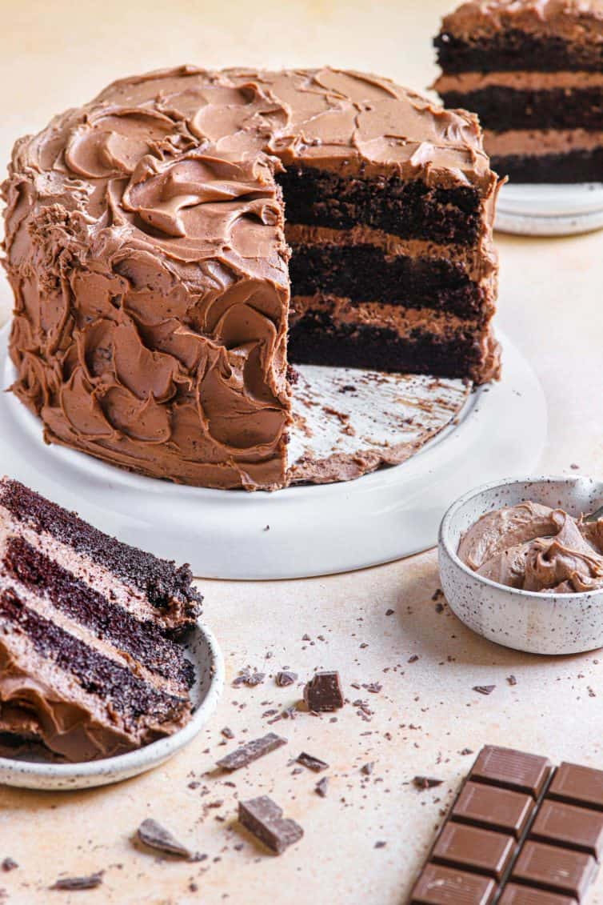

Best-Ever Chocolate Cake

Description
This is my favorite recipe ever for chocolate cake and is always a big hit. This cake is intensely chocolate and unbelieveably moist.
I sometimes like to add extra coffee into the cake and buttercream to turn it into a delicious mocha cake.
Ingredients:
For the cake
- 2½ cups (312.5g) + 1 tbsp all purpose flour
- 3 cups (600g) granulated sugar
- 1 cup (86g) + 1 tbsp Dutch-process cocoa powder
- 1 tbsp baking soda
1½ tsp baking powder
- 1½ tsp salt
- 3 eggs (at room temp)
- 1½ cups (360ml) buttermilk (at room temp)
- 1½ cups (355.5ml) strong black coffee, hot
- ¾ cup (163.5 ml) vegetable oil
- 4½ tsp vanilla extract
For the chocolate frosting
- 8 ounces (226.8 g) semisweet chocolate (finely chopped)
- 2 cups (454 g) unsalted butter (room temp)
- 5 cups (600 g) powdered sugar
- 2 tsp vanilla extract
Steps:
Cake base
- Preheat oven to 350 degrees F. Grease three 8-inch round cake pans, line the bottoms with rounds of parchment paper,
grease the parchment, then flour the insides of the pans, tapping out excess; set aside.
- In the bowl of an electric mixer (or large mixing bowl if you're using a hand mixer), sift together the flour, sugar,
cocoa powder, baking soda, baking powder and salt. In a medium bowl, whisk together the eggs, buttermilk, coffee,
oil and vanilla.
- Add the wet ingredients to the dry ingredients and mix for 2 minutes on medium speed. Scrape the sides and bottom of
the bowl and mix for an additional 20 seconds (the batter will be very thin).
- Divide the batter evenly among prepared pans. Bake for 20 minutes and rotate the pans in the oven. Continue to bake
until a toothpick inserted into the center of one of the cakes comes out almost clean (with a few moist crumbs), about
12 more minutes. Cool the cakes (in the pans) on wire racks for 20 minutes, then carefully turn them out onto cooling
racks to cool completely. [Make-Ahead Tip! At this point you can wrap the layers in plastic wrap and keep at room
temperature for up to 1 day, or refrigerate for up to 3 days before frosting and serving. You can also wrap in aluminum
foil and freeze for up to 1 month. Thaw in the refrigerator overnight before frosting and serving.]
Chocolate frosting
- Place the chopped chocolate in a microwave-safe bowl and microwave in 30-second increments on 50% power, stirring after
each, until the chocolate is melted and smooth. Set aside to cool to room temperature.
- Meanwhile, using the whisk attachment of your stand mixer, whip the butter on medium-high speed for 5 minutes, stopping
to scrape the bowl once or twice.
- Reduce the speed to medium-low and gradually add the powdered sugar. Once all of the powdered sugar is incorporated, add
the vanilla, mixing until incorporated. Add the melted chocolate and whip at medium-high speed until light and fluffy,
about 2 minutes, scraping the bowl as needed to incorporate all of the chocolate.
Assemble the cake
- Place one of the cake layers on a serving platter or cake stand and spread 1 cup of the frosting over the top in an even layer.
Place another cake layer on top of the frosting and spread with another 1 cup of the frosting. Place the last cake layer on top
of the frosting upside-down, then frost the top and sides of the cake and decorate as desired. The cake can be kept, covered,
at room temperature for up to 4 days. You can also freeze the cake, well-wrapped in plastic wrap and aluminum foil, for up
to 1 month.